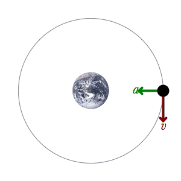

Satellite Motion
Until now, we have discussed gravitation as well as circular motion seperately. But often, the 2 are combined, in circular orbits.
And yes, even though Kepler's 1st Law clearly states closed orbits are elliptical, circular orbits are simpler to understand at first, since we can apply what we know from uniform circular motion. After circular orbits we can move on to, elliptical orbits as we will see in the orbital mechanics section, but that's for later.
However, circular orbits is not neccessarily a bad approximation since Earth and Mars orbits are very close to being circular.
Dynamics

Planets are able to orbit the Sun because the gravitational force exerted by the Sun on the planets cause the planets to fall towards the Sun in a circular path. The same applies to satellites and the Earth.
For a circular orbit, whose gravitational force provides the centripetal force:
Where:
\(m\) is the satellite's mass
\(M\) is the planet's mass
\(r\) is the radius of orbit
\(\omega\) is the angular speed
\(v\) is the tangential speed
Note
Note that the equations are independent of the mass of the satellite
Question
A communications satellite orbits the Earth in a circle of radius 9000 km. At that distance \(g=4.9 m s^-2\). The speed of the satellite is:
a) \(6.6 km s^-1\)
b) \(8.9 km s^-1\)
c) \(8.4 km s^-1\)
d) Not possible to determine without knowing mass of the satellite.
A.
Energy
In principle, given the gravitational force and circular motion equations, we can solve for any motion, similar to how in mechanics all we need to solve for motion are Newton's laws. But in mechanics and celestial mechanics, it is often useful to think of concepts that might simplify our life later on, and one of them is energy.
A satellite of mass \(m\) in orbit with radius \(r\) around the Earth (mass \(M\)) has both kinetic energy \(K\) and gravitational potential energy \(U\).
Recall for circular motion:
Cancelling out the \(r\) and further simplifying:
Hey that looks familiar. Hence:
This is a crucial result.
Hence, we can obtain the total mechanical energy:
This is also an important result, and from there, we can see that:
It is these 3 equations that may/may not make your life a lot more easier when solving for motion of a satellite in orbit, especially when it is easier to keep track of the energies rather than forces.
Once again a bit of a tangent
In Newtonian mechanics (the one we are dealing with right now and the one you will deal with for a long time), forces lead to motion and the motion is represented by causality as one event causes the other. But physicists got mildly frustrated when there are too many forces to keep track, so they resorted to using an energetical approach since that is often easier to track, called Lagrangian mechanics. It is also to be noted that just because you take an energy approach to a problem, does not mean you are doing Lagrangian mechanics, that is a seperate beast of its own.